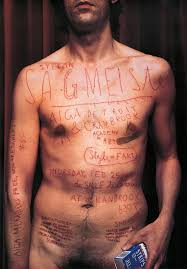
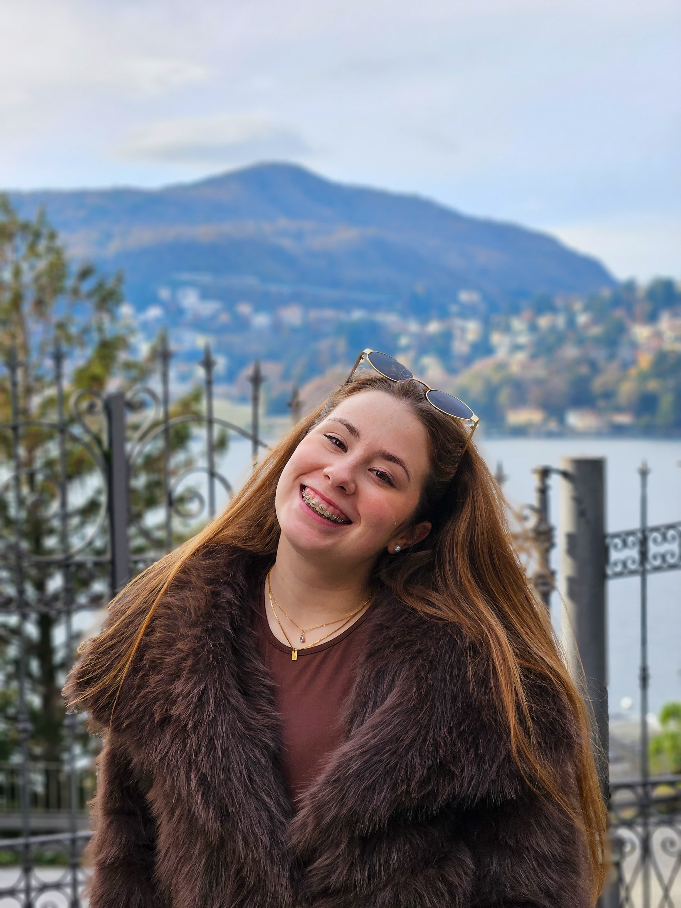
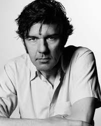
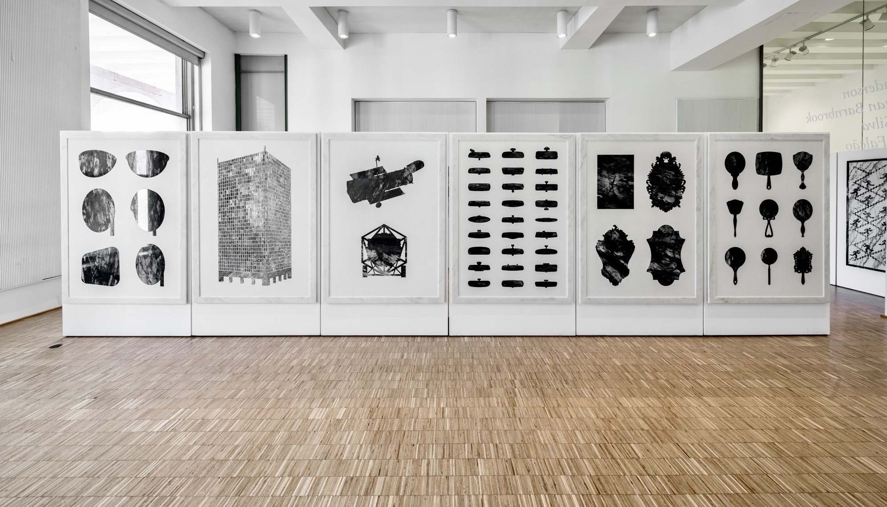
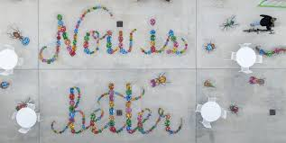
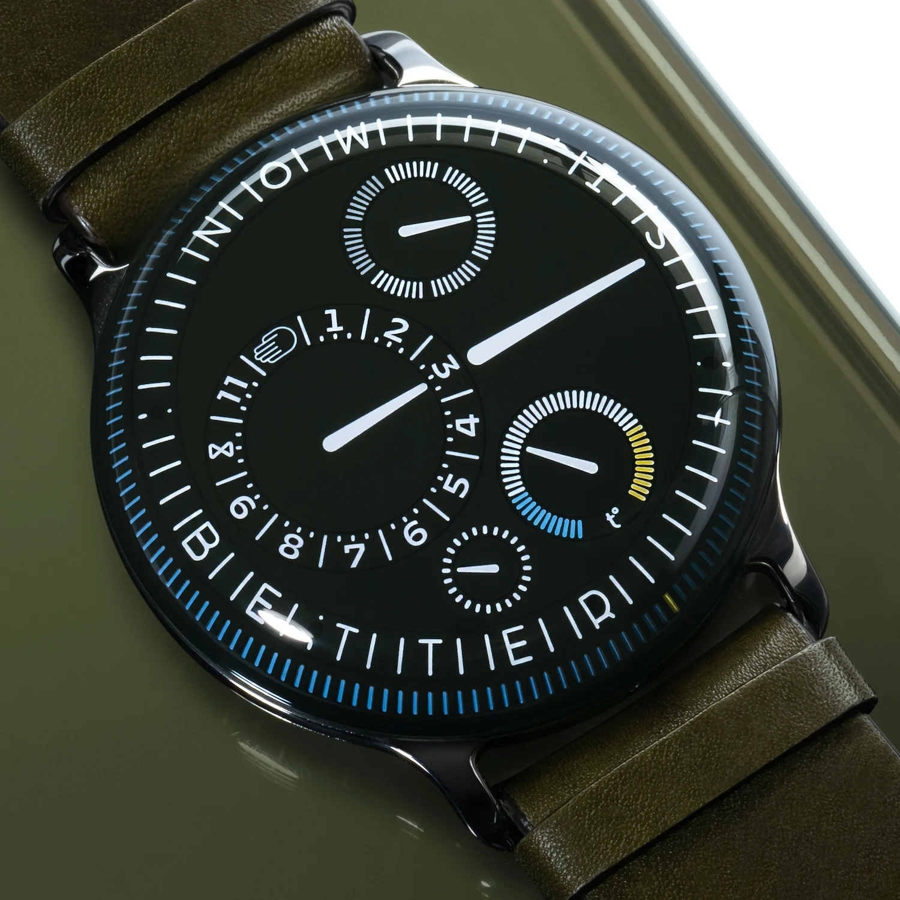

AIGA Detroit (1999)
Texto gravado no corpo, uma das imagens mais icónicas e provocadoras de Sagmeister.
Design gráfico
Este site reúne uma seleção de exercícios académicos e explorações pessoais em design gráfico, com foco em identidade visual, tipografia e experiências visuais mais abstratas.
Um espaço em constante construção: projetos da disciplina, estudos de autores, experimentos tipográficos e pequenas obsessões visuais que não cabem num PDF de portefólio tradicional.
Cada aba revela uma parte deste processo – da apresentação pessoal a um mergulho mais profundo no universo de Stefan Sagmeister e na forma como influenciou o meu trabalho.
Sobre mim
Antes de explorares, acho que deverias saber quem sou e o porquê de ter criado este site.
Olá! O meu nome é Mafalda Alves, sou estudante de Ciências da Comunicação no 2.º ano, na Universidade Fernando Pessoa, e este site nasce da cadeira de Design Gráfico, mas também de uma vontade pessoal de organizar o caos de ideias que tenho na cabeça. Mais do que um portefólio fechado, encaro-o como um laboratório onde posso testar, errar e voltar a montar as coisas de outra forma.
Interesso-me por tudo o que seja comunicação visual que foge ao óbvio: identidades que não são totalmente “limpas”, composições que parecem estranhas à primeira vista, pequenos detalhes que obrigam a olhar duas vezes. Gosto de explorar formatos, texturas e combinações improváveis, misturando referências de arte, cultura visual e aquilo que vou descobrindo no dia a dia.
Adoro falar, discutir ideias e fazer perguntas a mais – faz parte da forma como penso e crio. A criatividade, para mim, não é só “ter ideias giras”, é aceitar o desconforto, o acaso e o erro como parte do processo.
Este “arquivo visual de coisas que não querem ser óbvias” reúne exercícios académicos e experiências pessoais do tipo de comunicadora em que me estou a tornar. Não é uma coleção definitiva, é um work in progress que acompanha o meu percurso na universidade e fora dela.

História
Stefan Sagmeister foi o ponto de partida e, ao mesmo tempo, a desculpa perfeita para eu levar este site para um lado menos óbvio.

Ao longo da sua carreira, desenvolveu projetos para clientes culturais e comerciais, incluindo capas de álbuns, identidades visuais e exposições internacionais. Paralelamente, criou projetos autorais que abordam temas como felicidade, beleza e ética no design, defendendo que a estética e o impacto emocional são componentes fundamentais da comunicação visual.
Sagmeister é amplamente reconhecido por expandir o papel do designer gráfico contemporâneo, demonstrando que o design pode ser simultaneamente funcional, conceptual e crítico.
Quando o professor, Francisco Mesquita, me deu o tema, eu conhecia o nome, mas não tinha noção da intensidade com que ele usa o corpo, o desconforto e a emoção como matéria de design. À medida que fui explorando o trabalho dele, percebi que não se trata só de fazer imagens “bonitas”, mas de criar experiências visuais que quase incomodam, que deixam marcas. Isso influenciou diretamente a forma como pensei este projeto.
Ao construir o site, quis fugir da ideia de portefólio limpinho e neutro: a paleta escura e quente, o ruído, a sensação de textura e as frases que não explicam tudo à primeira são escolhas inspiradas na forma como o Sagmeister transforma o design em algo físico. A própria estrutura do site reflete isso, porque cada secção funciona como um fragmento de narrativa e a aba dedicada a ele acaba por contaminar o resto.
Conhecer o trabalho do Sagmeister fez‑me olhar para o design gráfico como algo mais performativo e menos distante. Em vez de ver este site apenas como um exercício técnico, passei a encará‑lo como um pequeno gesto na mesma direção: usar o digital para guardar experiências visuais que não querem ser óbvias, que assumem a estranheza e o desconforto como parte da linguagem. Este projeto é, no fundo, o meu primeiro “ensaio” pessoal a partir das provocações que o trabalho dele me trouxe.

Texto gravado no corpo, uma das imagens mais icónicas e provocadoras de Sagmeister.

Um trabalho inicial de Sagmeister ligado à experimentação tipográfica em pedra.

No projeto da ciclovia em Bentonville, a mensagem ‘Now is better’ aparece no espaço público, ligando a ideia de progresso e bem‑estar à experiência física de andar de bicicleta pela cidade.

No relógio mecânico Ressence Type 3X, a frase ‘Now is better’ ocupa o mostrador, transformando um objeto de luxo numa lembrança constante de que o presente pode ser melhor do que pensamos.
Marca Visual
Novidades em breve.
Cartaz
Novidades em breve.
Notícias
Novidades em breve.